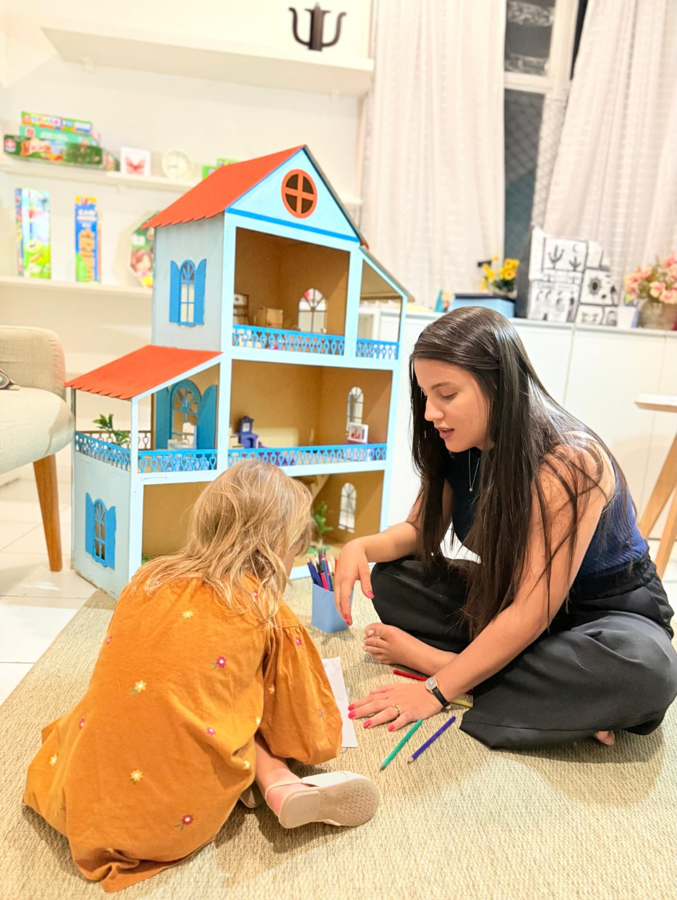
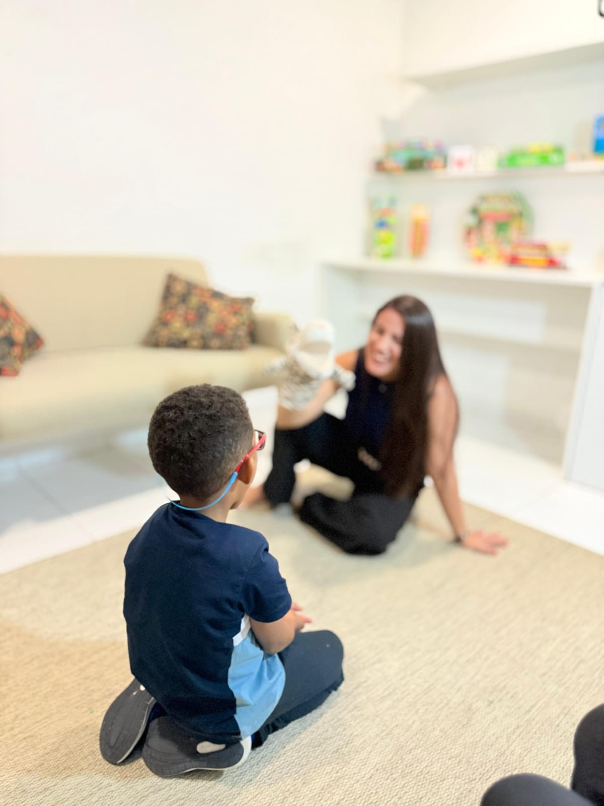

Psicologia infantil · TCC · Espinheiro, Recife
Psicóloga infantil no Recife para crianças de 6 a 12 anos
Sou Suellen Aleixo. Ajudo crianças a entender e lidar com o que sentem, usando a Terapia Cognitivo-Comportamental e trabalhando junto com a família e a escola.
(81) 99999-0337 · Atendimento particular, com horário marcado
- CRP 02/26895
- Consultório no Espinheiro
- Parceria com família e escola

Suellen AleixoPsicóloga · CRP 02/26895
Em que posso ajudar
O que costuma trazer as famílias ao consultório
Se você se reconhece em algum destes pontos, vale uma conversa. Você não precisa ter certeza de que "é caso de psicólogo" para chamar.
Ansiedade infantil
Medos, preocupações, dificuldade de se separar dos pais e queixas físicas ligadas à ansiedade.
Emoções e frustrações
Crises de choro, birras e dificuldade de lidar com limites e com o "não".
Seletividade alimentar
Recusa de alimentos e refeições que viraram motivo de conflito.
Rotina, sono e telas
Organização da rotina, hora de dormir e combinados saudáveis de tempo de tela.
Amizades e escola
Habilidades sociais, motivação para estudar e diálogo com os professores.
Entre outras demandas
A lista não esgota os motivos. Se a sua preocupação não está aqui, chame no WhatsApp e conte o que está acontecendo.
Como funciona
Do primeiro contato às sessões
-
Você chama no WhatsApp
Conte em poucas palavras o que está acontecendo, a idade da criança e o turno que funciona para vocês.
-
Primeira conversa com os responsáveis
A anamnese é feita só com pais ou responsáveis, para entender a história da criança. Pode ser online.
-
Sessões com a criança
Encontros presenciais no consultório, com recursos lúdicos, objetivos claros e combinados para o dia a dia em casa.

Sobre a profissional
Suellen Aleixo
Psicóloga clínica (CRP 02/26895) com foco em infância e família, graduada e pós-graduada pela Faculdade ESUDA. Trabalho com a Terapia Cognitivo-Comportamental (TCC), que ajuda a criança a perceber a relação entre pensamentos, emoções e comportamentos e a criar estratégias práticas para o dia a dia.
Mantenho formação contínua em TCC infantil, Psicoterapia Positiva e regulação emocional.
- Encontros estruturadosObjetivos claros e recursos lúdicos em cada sessão.
- Regulação emocionalRespiração, nomear emoções, tolerar frustração.
- Família por pertoOrientação aos pais e diálogo com a escola.
Como chegar
Consultório no Espinheiro, na Agamenon Magalhães
Os atendimentos são com horário marcado. Antes de vir, combine o dia e a hora pelo WhatsApp.
Dúvidas frequentes
Antes de chamar, talvez você queira saber
Atende por plano de saúde?
Não. O atendimento é particular. Os valores são informados pelo WhatsApp.
Qual a idade das crianças atendidas?
Crianças de 6 a 12 anos, em atendimento presencial no consultório do Espinheiro.
Como é a primeira sessão?
A primeira sessão é a anamnese, feita apenas com os pais ou responsáveis. É o momento de contar a história da criança e o que motivou a busca. Essa conversa pode ser online.
O atendimento pode ser online?
As sessões com a criança são presenciais. A conversa inicial com os responsáveis pode ser online, e há atendimento online para adultos.
Quais são os horários?
Os atendimentos acontecem à tarde e à noite, sempre com horário marcado. Os horários disponíveis são enviados pelo WhatsApp.
Vamos conversar sobre a sua criança?
Mande uma mensagem contando o que está acontecendo. O primeiro contato é sempre pelo WhatsApp.
Chamar no WhatsApp